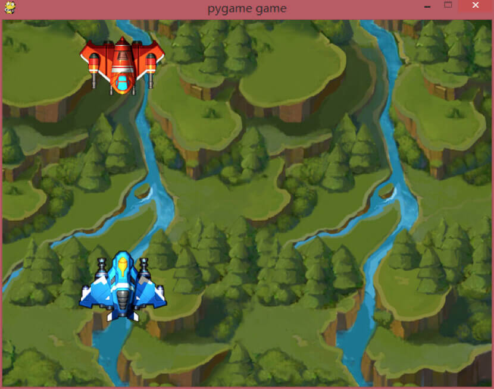
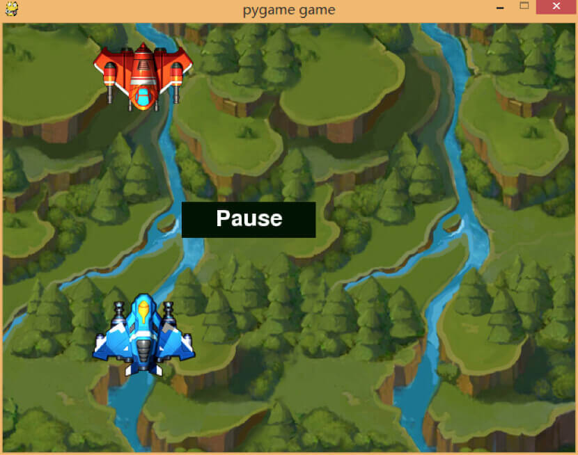
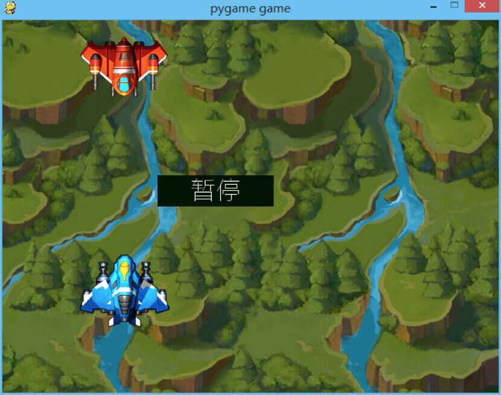

- 00 开篇词 跟我学，你也可以开发一款游戏！.md
- 复习课 带你梳理客户端开发的三个重点.md
- 第10讲 如何载入“飞机”和“敌人”？.md
- 第11讲 如何设置图像的前后遮挡？.md
- 第12讲 如何设置精灵的变形、放大和缩小？.md
- 第13讲 如何设置淡入淡出和碰撞检测？.md
- 第14讲 如何制作游戏资源包和保存机制？.md
- 第15讲 如何载入背景音乐和音效？.md
- 第16讲 如何在游戏中载入UI和菜单？.md
- 第17讲 如何用鼠标和键盘来操作游戏？.md
- 第18讲 如何判断客户端的网络连接？.md
- 第19讲 如何嵌入脚本语言？.md
- 第1讲 游戏开发需要了解哪些背景知识？.md
- 第20讲 脚本语言在游戏开发中有哪些应用？.md
- 第21讲 如何使用脚本语言编写周边工具？.md
- 第22讲 如何选择合适的开发语言？.md
- 第23讲 如何定制合适的开发协议？.md
- 第24讲 不可忽视的多线程及并发问题.md
- 第25讲 如何判断心跳包是否离线？.md
- 第26讲 如何用网关服务器进行负载均衡？.md
- 第27讲 如何制作游戏内容保存和缓存处理？.md
- 第28讲 热点剖析（一）：HTML5技术是如何取代Flash的？.md
- 第29讲 热点剖析（二）：如何选择一款HTML5引擎？.md
- 第2讲 2D游戏和3D游戏有什么区别？.md
- 第30讲 热点剖析（三）：试试看，你也可以编写一款HTML5小游戏！.md
- 第31讲 热点剖析（四）：安卓端和苹果端游戏开发有什么区别？.md
- 第32讲 热点剖析（五）：如何选择移动端的游戏引擎？.md
- 第33讲 热点剖析（六）：AR和人工智能在游戏领域有哪些应用？.md
- 第34讲 热点剖析（七）：谈谈微信小游戏的成功点.md
- 第35讲 热点剖析（八）：谈谈移动游戏的未来发展.md
- 第36讲 热点剖析（九）：谈谈独立开发者的未来发展.md
- 第3讲 游戏的发动机：游戏引擎.md
- 第4讲 底层绘图接口的妙用.md
- 第5讲 构建游戏场景的武器：地图编辑器.md
- 第6讲 从0开始整理开发流程.md
- 第7讲 如何建立一个Windows窗体？.md
- 第8讲 如何区分图形和图像？.md
- 第9讲 如何绘制游戏背景？.md
- 结束语 做游戏的过程就像是在雕琢一件艺术品.md
- 课后阅读 游戏开发工程师学习路径（上）.md
- 课后阅读 游戏开发工程师学习路径（下）.md
第16讲 如何在游戏中载入UI和菜单？
今天我们要在游戏中载入UI和菜单，在开始之前，我们先调整一下，我们之前讲过的游戏代码部分的内容。
首先我们需要更改游戏的背景图片，使之看起来更像是一款打飞机的游戏，而不是最早之前我们随便用的一幅山水图。我们先将游戏背景修改为正常的游戏背景，并且贴上飞机图像。

这里，我想到一个问题，之前有人留言问我，程序员需不需要有美术功底。我在这里说一下我的看法。如果你只是要做一个程序员，那我可以告诉你，不需要。但是，如果你不是只想做一个“码农”，你想有更多的发展，那各方面的知识，比如策划、美术，你都需要去了解。
UI的两种呈现形式
言归正传，我们需要在这个游戏画面上面，加一系列的内容来代表UI的呈现。UI的呈现有两种形式：
- 第一种就是美术画好UI图片，然后直接贴图，用鼠标控制一系列的点击和按下操作；
- 另外一种是自己画UI界面，比如画一个框，并且在框里面写上文字。
这两种方式各有利弊。
如果使用美术UI图贴图的方式，优点就是可以减少程序员的工作量。这样在版本迭代的时候，美术改一幅图就可以修改界面，方便快捷，你就不需要做多余的工作。但是这样的缺点就是，增加了游戏安装包的大小，毕竟UI是一幅图，只要是图就会有一定的体积，就会增加安装包的大小。
如果是程序员自己绘制的UI界面，好处就是主程序体积变得稍大一点，而游戏安装包不会变大。但是这样的缺点也很明显，就是程序员的工作量会增加很多。而且当游戏需要迭代的时候，或者界面需要更新的时候，程序员需要重新绘制或者重新编写UI源代码，大大增加了工作量。
我们现在是自己来开发，那我就讲一讲程序员绘制UI的方法。
我们通过模拟按钮的方式来摆放UI界面。首先，我们要在UI界面上摆放一系列字符，我们要实现的效果是，只要使用鼠标点击到这个字符，就会变换字符的内容。这个过程，我们会用到鼠标操作、绘制矩形、字体和字符绘制相关的知识，下面我就来具体给你讲。
鼠标操作
我们先来看一下鼠标操作的知识。在Pygame中，鼠标操作用到的模块是pygame.mouse。在这个模块里面，点击事件的函数是get_pressed.假如有返回按钮1、按钮2和按钮3等等很多按钮,我们随便选一个点，假如说选了按钮1，那代码可以这么写：
pygame.mouse.get_pressed()[0]
这条语句不需要在事件语句里面操作，写在别的地方也可以，而且鼠标的操作在循环里一直是实时监测的。
绘制矩形
随后，我们要绘制矩形。 绘制矩形的目的是为了模拟一个按钮。 矩形绘制的代码是Rect，但是我们需要绘制在一个surface上，这个surface需要新建，然而在pygame中，如果使用pygame.surface.surface初始化一个surface的话，不能指定位置，x值是从0开始的。
所以在屏幕上看到的新建的surface是一个长条状的图层，所以我们需要将生成一个图层的子图层，并且，如果使用这个子图层的话，在blit的时候将会提示被锁定，所以，我们还需要将这个子图层进行拷贝。所以，我们的代码看起来是这个样子的。
the_rect = Rect(200, 100, 150, 40)
block_surface = screen.subsurface(the_rect).copy()
首先第一行代码是建立一个矩形，分别是左侧起始值是200，顶部从100开始，宽度150，长度40。随后，使用screen这个图层来建立一个子图层，子图层的大小按照the_rect这个矩形大小来建立。随后的一个copy函数，是将子图层进行拷贝，在后续的使用中，不会出现锁定图层的情况。
绘制字体和字符
之后我们要开始编写文字处理的代码，字体我们要用到pygame.font模块，我们先初始化一个字体，这个字体在安装pygame游戏库的时候就包含在了pygame里面，我们直接就可以拿来使用。现在我们初始化字体，并且将字体大小调整到25：
fnt = pygame.font.Font('freesansbold.ttf',25)
其中，freesansbold.ttf是pygame安装的时候默认存在的ttf字体文件，随后，我们在第二个参数设置为大小25。
我们拿到了fnt对象，然后使用这个对象调用render函数。这其实就是渲染，将文字渲染在屏幕，并且形成一个文字图层，函数原型是这样的：
Font.render(text, antialias, color, background=None)
其中第一个参数text是文字内容，第二个参数antialias是抗锯齿，第三个内容color是文字颜色，最后一个是背景颜色，默认可以忽略。
tsurf = fnt.render(text, True, (255,255,255))
我们将颜色设置为白色，所以是（255，255，255）。
tsurf是render返回的一个文字的图层（surface），我们之后要按照这个图层，来确定它的矩形框。
trect = tsurf.get_rect()
随后我们需要将文字摆在这个trect矩形框的中央，所以我们要进一步将trect确定在中央的位置，计算完中央的坐标值并且赋值过去。
trect.center = ((block_surface.get_width()/2),(block_surface.get_height()/2))
我们将最开始的复制的子图层的宽度和高度除以2，就得到了中心点的位置。
最后我们要做的就是在封装的函数内将blit部分包含进去，现在我们来看一下完整的包装函数代码。
def text_out(text):
fnt = pygame.font.Font('freesansbold.ttf',25)
tsurf = fnt.render(text, True, (255,255,255))
trect = tsurf.get_rect()
trect.center = ((block_surface.get_width()/2),(block_surface.get_height()/2))
block_surface.blit(tsurf, trect)
我们看到，在函数最后，我们blit了block_surface这个被拷贝的图层。
随后我们在游戏的大循环里面，需要判断鼠标的点击事件，我们之前所定义的矩形，代码是这样：
the_rect = Rect(200, 100, 150, 40)
所以这x的起始位置和结束位置是200和350，y轴的起始位置和结束位置是200和240，为什么y轴也是200开始呢？因为起始点 200既是x轴开始的点也是y轴开始的点。我们在代码里面这么判断鼠标的点：
txt = "Pause"
x, y = pygame.mouse.get_pos()
if pygame.mouse.get_pressed()[0]:
if x >=200 and x <= 350 and y >= 200 and y <= 240:
txt = "Clicked
我们将txt定义为Pause字符串，并且判断是不是鼠标左键点击的。如果是的话，判断是不是在 x 轴和y轴进行点击，如果不是的话，就将txt改为Clicked。
随后我们绘制按钮框，并且将按钮框背景设置为绿色，然后输出文字，并且绘制。
screen.blit(block_surface, (200, 200))
block_surface.fill([0,20,0])
text_out(txt)
将block_surface这个图层绘制在（200,200）的坐标点，并且将之涂为绿色，最后调用text_out函数，由于text_out里面已经编写了blit函数，所以不需要再次blit了。
我们来看一下效果图：

我们看到了一个绿色的按钮放置在屏幕上，并且有一个白色的Pause字样放在按钮上，如果是鼠标左键点击在这个按钮上，就会变成Clicked字样。
到这里，你可能会问了，为什么没有解释怎么输出中文呢？
在这种情况下，输出中文有两种解决方案。
第一种是比较底层的方案，就是根据中文进行点阵绘制，这需要很底层的代码操作，效率也不太高，所以这种方案我们不作讨论。
第二种就是改变字体，我们可以在初始化字体的时候，下载一些网上的中文字体先进行尝试，或者我们可以使用系统字体。在使用系统字体的时候，我们可以使用SysFont来初始化字体。
fnt = pygame.font.SysFont(‘微软雅黑’,32)
另外，还需要修改一个地方。我们需要在Python代码最开始的地方添加编码方式，并且将中文文字前面添加u字样来告诉解释器是Unicode的。
# encoding: utf-8
txt = u"暂停"
我们来看一下效果：

至此，中文的输出也已经完成了。
到现在为止，我们编写完了UI的按钮部分。至于菜单部分，我们也可以通过相同的方式来编写菜单效果。
作为菜单这些高级操作，比如点击出现下级菜单、隐藏菜单这些动态效果，可以使用图片的方式来制作菜单，并且进行载入。如果使用程序来编写菜单的效果，工作量就太大了。而如果是图片形式的话，只需要载入并且控制鼠标点击和绘制子菜单就可以了。
小结
今天我们学习了UI部分的编写以及文字的输出、鼠标的移动和抓取鼠标按键的实现，我来总结一下今天的内容。
不管何种类型的游戏引擎，鼠标的操作基本有3个值需要控制，左键、中键和右键。
按钮可以用常规的方法来绘制。如果想做出更好的效果，比如画框，可以在框里面再画一个小框，看起来像是有凸出感觉的样子。这就需要你平时多注意观察一些细节，然后去分析如何用我们讲过的简单的操作来实现这些内容。
在2D游戏中，很多游戏引擎都不支持中文的输出。如果要输出中文，假如你的引擎支持，那你可以使用系统字体或者其他中文字体；如果引擎不支持，可以使用一个一个点阵绘制的方式在屏幕上绘制中文。最后一种方式，也就是比较极端的方式，那就是使用图片来直接贴上中文字符，这种方式直接粗暴，但是图片资源量太大，而且如果你要在游戏中进行网络聊天，这里面其实还是没有从根本上解决中文输出的问题。
现在给你留一个小问题。
如果让你在上述的代码中，将按钮变成菜单，也就是点击按钮，就在下方出下一个下拉框，你会如何实现？
欢迎留言说出你的看法。我在下一节的挑战中等你！
© 2019 - 2023 Liangliang Lee. Powered by gin and hexo-theme-book.